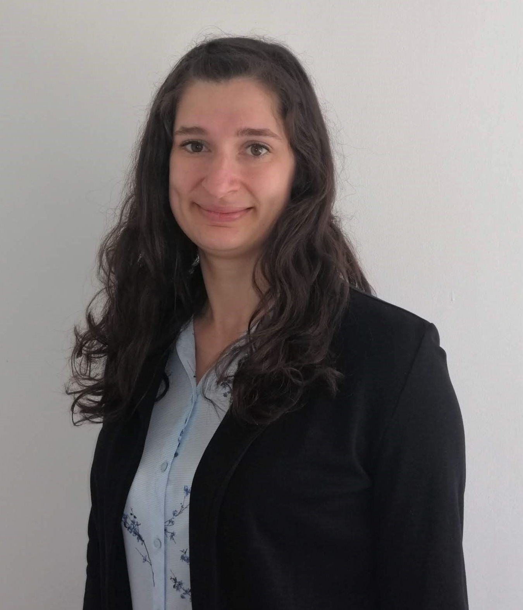

|  |
|
|
Születési idő: 1991.01.28. |
|
7763 Szőkéd, József Attila u. 16. |
|
+36 20 443 3335 |
|
ibolya91@freemail.hu |
Eddigi feladatkörök
|
FERLING Kft. 2013 – Mostanáig (2016-tól GYED)
Irodavezető, PR- és ügyvezetői asszisztens
|
Irodavezetői és ügyvezetői asszisztensi feladatok:
- általános irodai adminisztráció és belső nyilvántartások vezetése
- ügyfélfogadás, telefon és e-mail kapcsolattartás
- kollégák munkájának támogatása, logisztikai feladatokat is beleértve
- ügyvezető napi munkájának támogatása, konferenciák, megbeszélések előkészítése
|
Marketing és PR feladatok:
- 3 fős team tagjaként számos ügyfél marketing és PR kommunikációja. Sajtótájékoztatók és
egyéb
rendezvények megszervezése, sok esetben cateringgel, helyszínnel szállással együtt
- projektekkel kapcsolatos adminisztráció (kiadások felvezetése a munkalapokra, gyakornoki
programmal
kapcsolatos adminisztráció)
- ügynökségi tenderpályázatok előkészítésében részvétel
- kiadványkészítés menedzselése, nyomdai kapcsolattartás
- sajtóanyagok összeállítása, reklámszövegek írása
|
Szoftverismeret
|
- microsoft office csomag – általános
irodai adminisztrációra, excelben
függvénykezelésre is (ECDL
bizonyítványom van róla)
- google drive – felhőalapú
megosztásra
- facebook (oldaladmin felület) –
ügyfelek facebook oldalának
gondozására, statisztikák kinyerésére
- Visual Studio Code (folyamatban
van az elsajátítása) – online
programozó képzés keretei között
tanulom jelenleg is, weboldal
létrehozására (.css, .js, .json, .html) –
Ez még nem biztos ismeret, tudom mi
mire való, de még nem tudok önállóan
egy dinamikus, kreatív, igényes
weboldalt létrehozni!)
- prezi.com – prezentációk készítésére
|